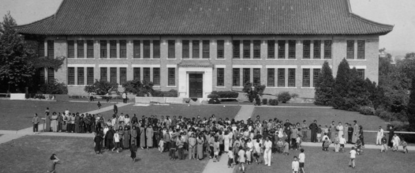
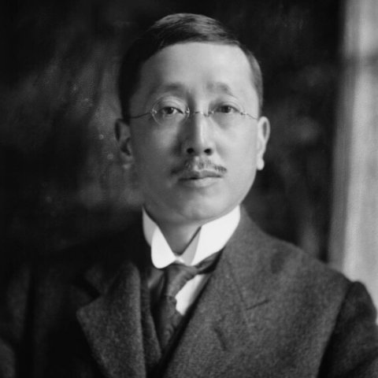
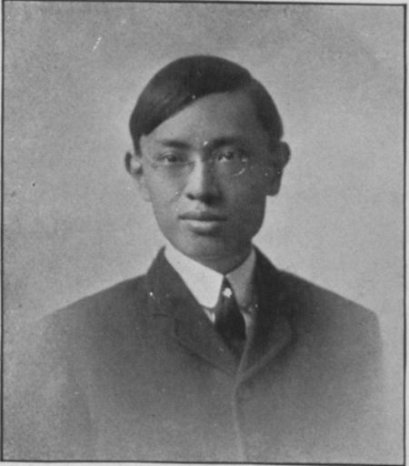
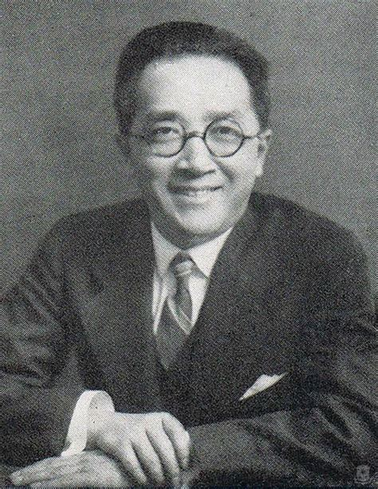
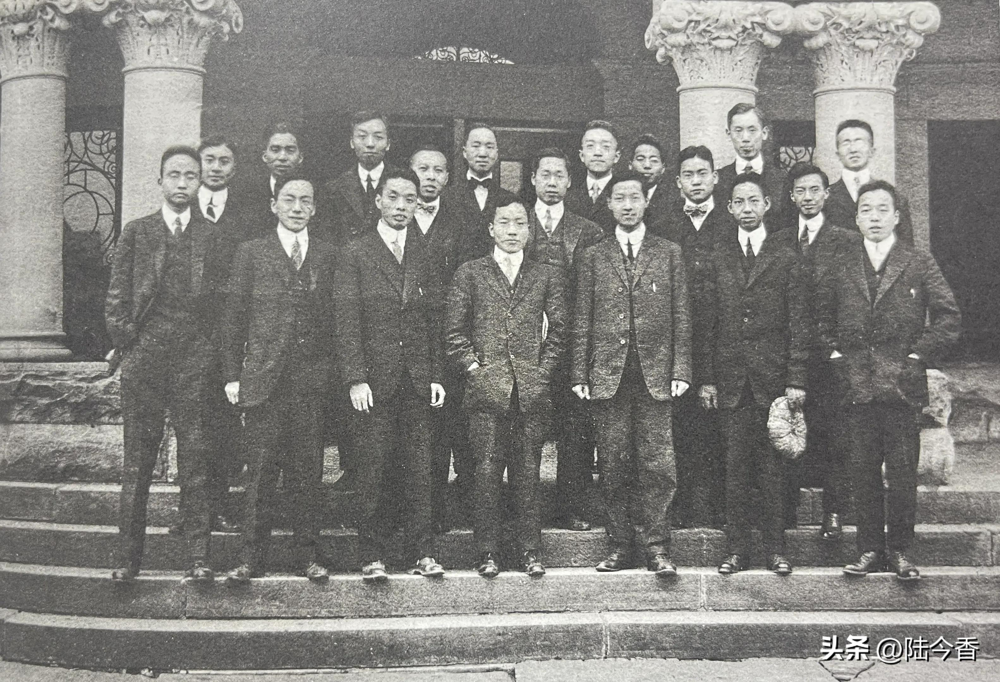
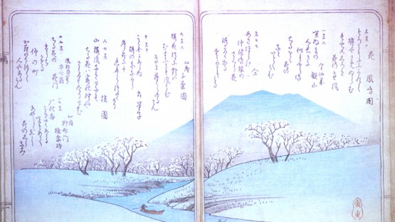
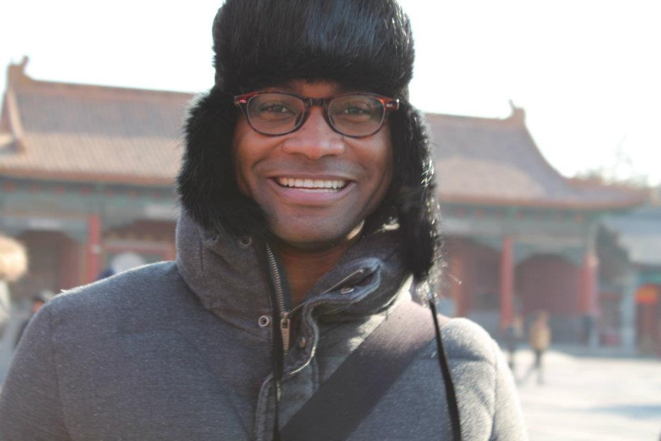
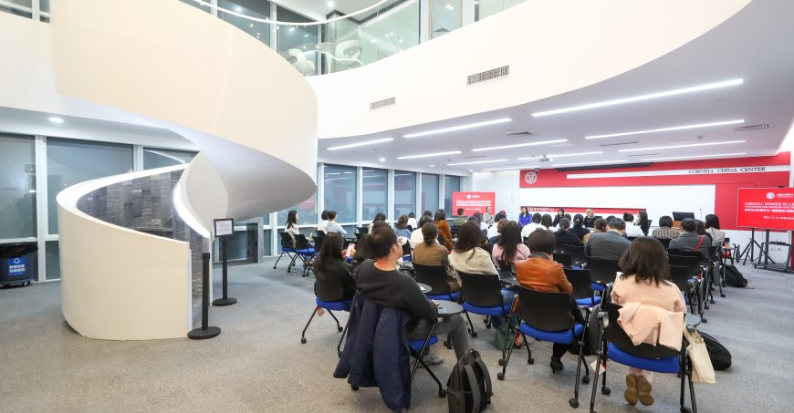

AMST 2001 — Final Project · Cornell University
Why Is Cornell So Famous in China?
A history of Cornell's relationship with China — its institutional ties, its alumni, and how it appears in Chinese media and culture.
Introduction
A question that starts at home
When I was back home in Seattle over winter break for my yearly checkup, I got the standard small-talk question of where I go to school. When I said "Cornell," the doctor immediately responded with "Oh, that's the one in California, right?" This was actually one of several instances of people back home not knowing what Cornell was.
Growing up on the west coast, the Ivy League was much more distant both in geography and in cultural awareness than many might imagine. In fact, I didn't even know most of the Ivy League schools before moving to Ithaca. I did, however, always know Cornell. Yes, mostly because my parents attended Cornell for grad school, but also because Cornell is widely recognized in China as a prestigious institution.
I've always found it striking that Cornell's reputation in China and amongst my extended Chinese family often times exceeded that of my peers growing up on the west coast. Among Chinese students and families, Cornell carries a prestige and cultural recognition that goes beyond rankings. This project asks: why?
To answer that question, this site explores three threads: the historical relationship between Cornell and China, Cornell's representation in Chinese media and popular culture, and a firsthand account from a Cornell alumn who made the journey from China to Ithaca.
Historical Ties
Cornell and China: a timeline
Since the late 19th century, Cornell and China have been linked by more than a century of academic exchange. Chinese scholars came to Ithaca while Cornell faculty and alumni worked in China. Across different eras, through education, research, and community engagement, these connections have shaped learning and understanding on both sides.

1879
Chinese language comes to Cornell
Cornell's first Chinese-language course draws nearly 10% of the university's 463 students — a remarkable sign of interest from the very beginning.
1901
Alfred S. Sze graduates
The first Chinese student to graduate from Cornell, Sze went on to become China's first ambassador to the United States in 1935.

1901
Willard Straight graduates
Straight becomes an active American diplomat to China in the 1900s, one of many Cornellians shaping U.S.-China relations early on.

1905
S.C. Thomas Sze graduates
Alfred's younger brother Tommy became a major force in building China's railroad system — another Cornellian leaving a lasting mark on modern China.

1906
First Chinese government delegation visits
Cornell receives the first official Chinese government delegation to visit the Ithaca campus. That same year, trustees authorize six annual scholarships for Chinese students.
1908
Boxer Indemnity scholarships
Cornell applies Boxer Indemnity funds to expand scholarships for Chinese students, opening the door for a growing wave of students from China.
1914
Hu Shih graduates
Hu Shih goes on to become one of China's most influential intellectuals, driving social and educational reform back home — a testament to what a Cornell education could set in motion.

1915
China Science Society founded at Cornell
Chinese students at Cornell establish the China Science Society, which relocates to China in 1918 — carrying Cornell's intellectual influence directly back across the Pacific.

1918
The Wason Collection arrives
Charles W. Wason (BS 1876) donates his extraordinary collection on East Asia to Cornell University Library, laying the groundwork for serious China scholarship at Cornell.

1924
Cornell-Nanking Crop Improvement project
Cornell partners with the University of Nanking to train Chinese plant breeders and boost crop yields by 10–20% — Cornell's first major international cooperation effort.
1944
Department of Chinese Studies founded
Cornell creates a dedicated Department of Chinese Studies, today known as the Department of Asian Studies.
1950
China Program established
Cornell formalizes China-focused scholarship with a dedicated China Program, today known as the East Asia Program.
1972
Full-Year Asian Language Concentration
Cornell launches a program "FALCON" that lets students immerse themselves in Mandarin (or Japanese) all day, every day for an entire year — one of the most intensive language programs in the country.

1979
First in line when China reopens
When China reopens to the West, Cornell is among the very first universities to sign cooperative agreements for education and research — decades of relationship-building paying off.
2001
The Sze legacy continues
Tommy Sze's son Yao Yuan Sze endows the directorship of Cornell's Sibley School of Mechanical and Aerospace Engineering in his father's honor — three generations of a family tied to Cornell.
2016
Cornell China Center launched
Cornell formalizes its China work under a dedicated China Center, integrating research, education, and outreach into a single coordinated initiative.

Media & Culture
Cornell in Chinese popular culture
blah blah blah
TV / Film
Example title
blah blah
Social media
Example trend or post
blah
Literature
Example reference
blah blah blah
analysis or reflection on the media examples above, what do these representations have in common? what do they reveal about Cornell's image in China?
Oral History
Interview: Fei Lu, Cornell '04
Fei Lu grew up in China and attended Cornell University for graduate school, earning her degree in 2004. Her experience bridges both sides of this project's central question — she saw Cornell's reputation from within China before experiencing it firsthand in Ithaca.
[Add more biographical context here before the interview excerpts.]
"[Key quote from interview will go here — something that captures her perspective on Cornell's reputation in China.]"
— Fei Lu, Cornell grad '04
[Add more quotes, themes, and reflection from the interview here. What did you learn? How does her account connect to the historical and media research?]
Interview details
Interview conducted [date], [location/format]. Recording and transcript on file. Consent and release forms signed.
Sources
Bibliography & acknowledgments
[Add a brief note here about your research process — what archives or databases you consulted, any challenges you encountered, etc.]
Note
Sources will be added here as research progresses. At least three credible, non-Wikipedia sources are required for the final submission.
- 1.https://ecommons.cornell.edu/entities/publication/0ae6c638-0361-4a44-bf7c-51057017f621
- 2.https://inf.news/en/history/5a6bdc4fb96548593112713b0c07c67f.html
- 3.https://eric.ed.gov/?id=ED192619
- 4.https://www.facebook.com/FALCONProgram/photos/a.10150743074352902/10150743162607902/